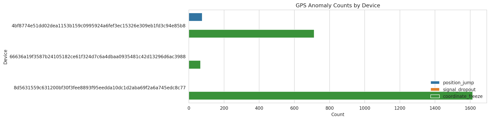
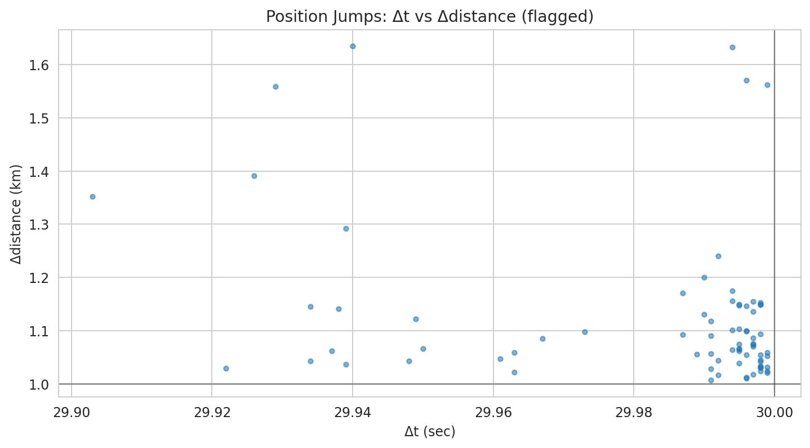

Total records: 21409
Distinct devices: 3
| device_id | n_rows | position_jump | signal_dropout | coordinate_freeze | position_jump_rate_pct | signal_dropout_rate_pct | coordinate_freeze_rate_pct |
|---|---|---|---|---|---|---|---|
| 4bf8774e51dd02dea1153b159c0995924a6fef3ec15326e309eb1fd3c94e85b8 | 7629 | 76 | 0 | 713 | 0.996 | 0.0 | 9.346 |
| 66636a19f3587b24105182ce61f324d7c6a4dbaa0935481c42d13296d6ac3988 | 7629 | 0 | 0 | 66 | 0.000 | 0.0 | 0.865 |
| 8d5631559c631200bf30f3fee8893f95eedda10dc1d2aba69f2a6a745edc8c77 | 6151 | 0 | 0 | 1614 | 0.000 | 0.0 | 26.240 |

